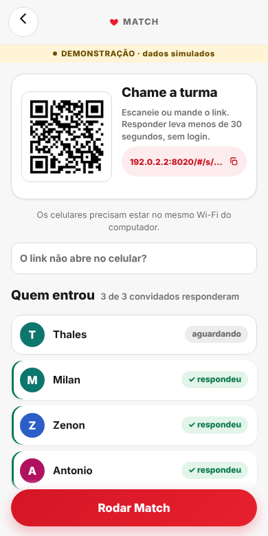
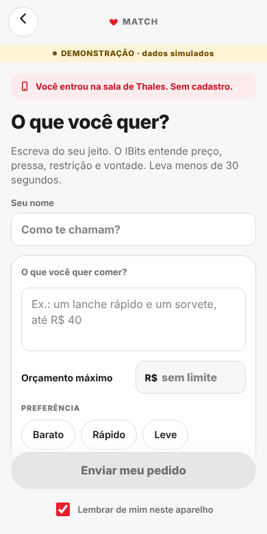
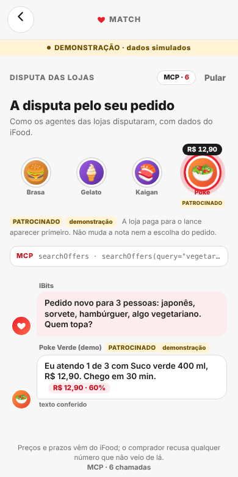
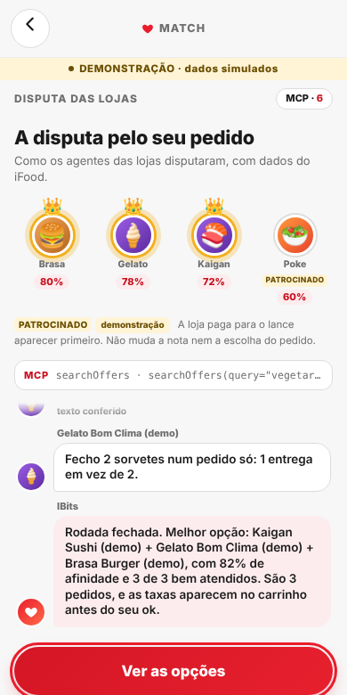

Sexta à noite, quatro amigos, quatro vontades, um grupo de WhatsApp.
Hoje os restaurantes vão disputar o pedido da nossa turma —
e o agente que compra trabalha para nós, não para quem paga anúncio.
Thales Miguel Hajes · Milan · Zenon · Antonio — Hackathon SEMCOMP × iFood "Vendendo com Agentes" · São Carlos · 18/10/2026
Não existe número público no Brasil sobre pedido em grupo. Então perguntamos:
[pesquisa SEMCOMP, n = X]
[X de Y levaram mais de 15 min para decidir]
[X de Y: cada um pediu separado / alguém cobrou Pix depois]
Amostra de conveniência, anônima, não representativa. Formulário em docs/pesquisa-usuarios.md.
Agentes vendedores — um por restaurante, só vê o próprio cardápio
No protótipo, simulamos o agente de cada loja a partir do cardápio público do MCP. Em produção, a loja pluga a própria política; o iFood controla as regras.
backend/tests/test_motor.py).Thales organiza no projetor. Três convidados entram pelo QR, sem login:
Milan: "japonês e um sorvete, até R$ 45"
Zenon: "hambúrguer e sorvete, até R$ 50"
Antonio: "algo barato e vegetariano, até R$ 25"
Sala → disputa das lojas → "É um Match!" → vaquinha → deslize para enviar.
Plano B: vídeo gravado com o mesmo roteiro.


Afinidade = quanto os pratos combinam com o que cada um pediu, segundo a IA (média por pessoa). Itens: R$ 103,50, sem taxa.


Preço, taxa, prazo e disponibilidade vêm das tools do MCP. A IA não escreve conta.
Toda fala de loja passa por validação: número fora do lance, restrição sem etiqueta no cardápio ou superlativo inventado → vira texto pronto.
A tela mostra a origem: "agente da loja (IA)" ou "texto conferido".
submitOrder só com userConsent: true, depois do "deslize para enviar" e com 100% da vaquinha paga.
No MCP real o envio fica travado por padrão (IFOOD_MCP_PERMITIR_ENVIO=false).
Alergia: o cardápio nem sempre informa. A restrição vira "segundo a descrição" + "confirme com a loja".
Total mudou? getCart de novo antes de cada envio; se mudou, para e pede novo ok.
docs/tecnico.md §5 e §9; backend/tests/test_leilao.py.agentHints: método de entrega recomendado; no trackOrder, seguimos retryMessage e paramos em pollingStopinput_schema real; userLocation como objetoNo PC da equipe, com o MCP real: login OAuth (PKCE S256), list_tools com 23 tools, listAddresses ok.
[ms medidos no PC — preencher: searchOffers ___ ms · getCart ___ ms]
backend/app/match/busca.py e checkout.py. Diagnóstico real: 17/10/2026.| Rappi (Brasil) | Uber Eats | DoorDash | Ailo (iFood) | Match | |
|---|---|---|---|---|---|
| Pedido em grupo por link | sim | sim | sim | não citado | sim, convidado sem login |
| Mais de 1 loja | não encontrado | 2 lojas próximas | DoubleDash | não | até 3 (avisa N taxas) |
| Quem escolhe os itens | cada um, à mão | cada um, à mão | cada um, à mão | IA, para 1 pessoa | IA, para o grupo, com justiça |
| Lojas disputando o pedido | não | não | não | não | um agente por loja |
| Só sai com 100% pago | não encontrado | não encontrado | não encontrado | — | sim |
O Ailo já fecha um pedido em ~30 segundos. Falta o pedido da turma.
Escala: 180 mi+ pedidos/mês, 65 mi de clientes, 500 mil+ lojas. Não sabemos quantos são de grupo; não estimamos.
O iFood Ads já é leilão por visita ao cardápio, e o próprio iFood diz: "Dinheiro sozinho não compra posição."
Meta do iFood: 5x em Ads até 2030. Na Uber, anúncio já passa de US$ 1,5 bi/ano.
Proposta: lance por aparição na disputa. Preço quem define é o iFood; não inventamos valor.
A doc lista 24 tools; o list_tools real devolve 23 (falta listItemTaxonomy).
userLocation sem docsearchOffers e getRecommendations exigem userLocation como objeto. A doc não cita; com lat/lng soltos, a busca volta vazia.
Exemplos citam auth.ifood.com e @ifood/mcp-sdk, que não existem; o real é id.ifood.com.br. PKCE: a doc diz pkce, o servidor pede S256.
Pedido para o MCP: pagamento dividido, cancelamento e várias lojas numa entrega.
docs/feedback-mcp.md (entregável 6).docs/proposta-negocio.md §5No canal de agentes, o iFood vende atenção para as lojas —
sem nunca vender a decisão da turma.
Match: cada um pede o que quer, as lojas disputam, ninguém vira gerente do pedido. Obrigado!